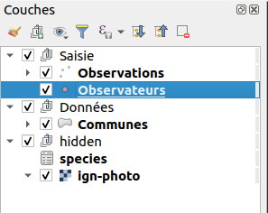
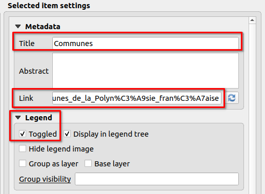
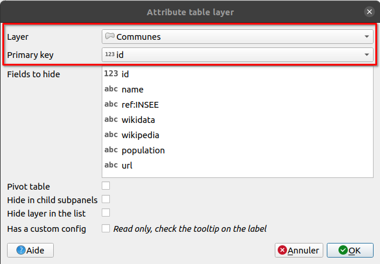
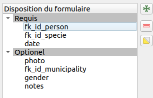
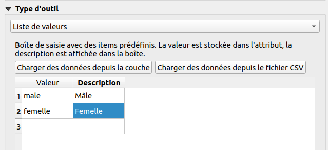
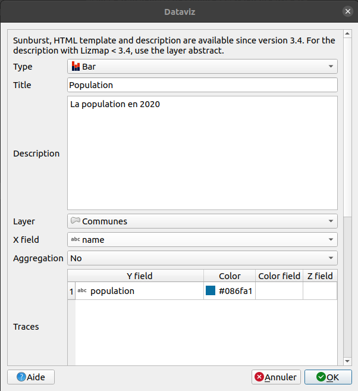
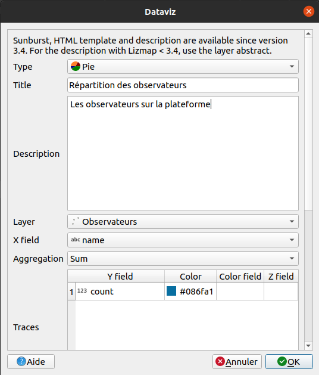
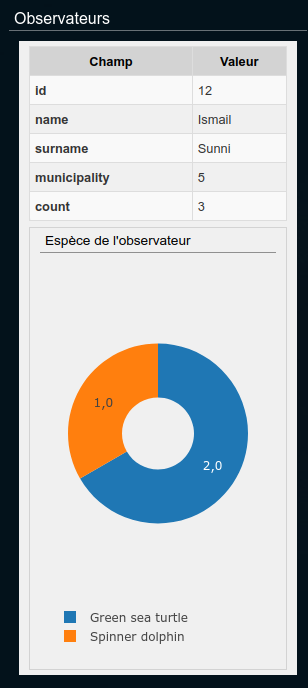
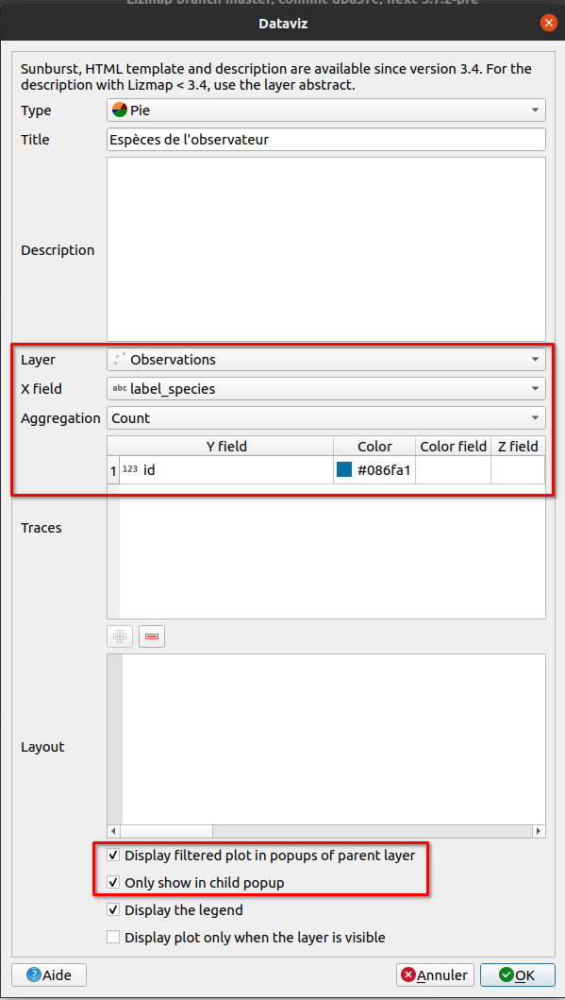
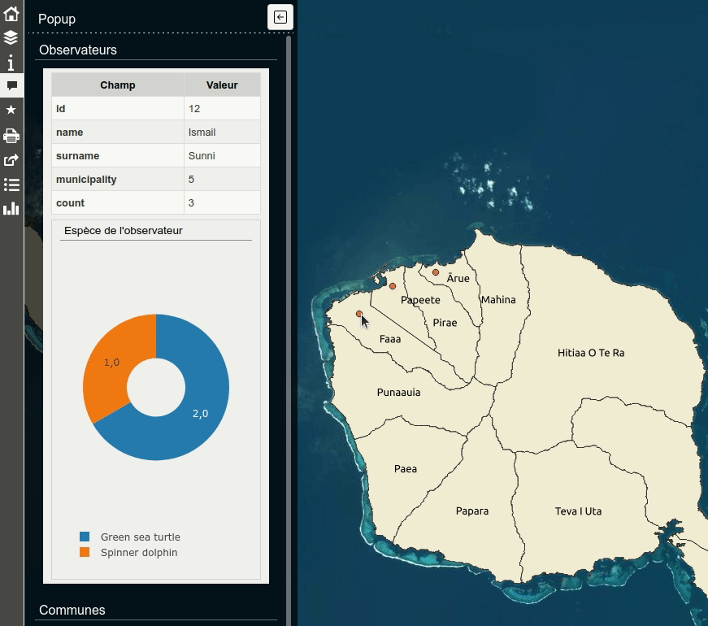

Workshop Lizmap#
Pre-requirements#
This workshop is designed for Lizmap users, half day.
- FTP Client (WinSCP for Windows, Filezilla for MacOS/Linux)
qgis/theme_formation: for the workshopqgis/theme_formation/media/metadata.pdf: a PDF file
- QGIS 3.16
- Lizmap plugin on QGIS Desktop
- QGIS project attached in the email
- The QGIS project contains layers from the PostgreSQL database
Links#
- Demo https://demo.lizmap.com
- Lizmap hosting out-of-the-box https://www.lizmap.com
- PDF/HTML presentations https://docs.3liz.org/talks/#lizmap
- Mailing-list Osgeo Lizmap
- Twitter accounts :
- https://twitter.com/LizmapForQgis dedicated to Lizmap
- https://twitter.com/3LIZ_news about 3Liz
- https://twitter.com/3lizRelease everytime we make a new version on GitHub in one of our project
- Source code
- Lizmap Web Client https://github.com/3liz/lizmap-web-client/
- Lizmap QGIS side (desktop and server) : https://github.com/3liz/lizmap-plugin/
- 3Liz https://github.com/3liz/ for QGIS Server plugins, Lizmap modules
Documentation#
- https://docs.lizmap.com/
- Check the Lizmap architecture and manuals
First quick map#
- Open the project
- Set the extent on the map canvas (showing all islands)
- In the Project Properties :
- Project menu / Properties
- Relations tab, add all relations automatically with Discover Relations
- QGIS Server tab,
- Service capabilities
- set a title such as
Lizmap training NAMEand an abstract
- set a title such as
- WMS capabilities
- use the current canvas extent for the published extent
- WFS capabilities
- publish all layers
- Service capabilities
- Open the Lizmap plugin
- Only one time, add a server with your instance home page URL
- Example
https://workshop.lizmap.com/foss4g_2021/ - We don't need user and password
- Example
- Close the Lizmap plugin (it's creating the Lizmap file when closing the window).
- Transfert the project (
.qgset.cfg) in the folderqgis/topic_workshopon the FTP
Tip
Bonus if you have a small PNG picture called name_of_project.qgs.png to replace the default project thumbnail.
Quick overview of the Lizmap web interface#
- The map
- Lizmap folders
- Administration panel
Legend#
- Add some groups in the legend
EditingwithpersonsandobservationsDatawithmunicipalitieshidden, with smallh, withspeciesand you can add OSM base layer (from the QGIS Browser, XYZ Tiles)
- Reorder layers to put them inside these groups according to the screenshot below
- Rename layers with a more human-readable
- Except for the OSM layer, in the group
hidden, the name must beosm-mapnik
- Except for the OSM layer, in the group

Success
Lizmap is using QGIS Server in the background, the legend is, therefore, the same as in QGIS Desktop.
Some settings in the QGIS project or in the Lizmap plugin can have effects in the web interface.
Tip
Starting from now, often send the QGS file and the CFG file on the server to check the result.
- Make a quick symbology on a point layer.
- Add labels on the municipalities layer and add a scale based visibility for these labels (1:300 000)
namefield for the source- Rendering tab, scale based visibility minimum set to 1:300 000
- Go in the Lizmap plugin, Layers tab :
- Enable the municipalities layer by default
- Add some links on two layers:
- PDF for the persons layer :
media/metadata.pdf, a PDF link, stored in the foldermedia(you can see it in the FTP client) - HTML for the municipalities :
https://en.wikipedia.org/wiki/French_Polynesia
- PDF for the persons layer :
- Go in Baselayers tag and add the OpenStreetMap Mapnik background.

Attribute table#
- From the plugin, enable the attribute table for the municipalities layer.
- In the Attribute table tab, add a new layer

Tip
We can improve our attribute table by adding some alias on the fields :
- Properties on the vector layer ➡ Form attributes ➡ Alias for all fields
Let's add some popups "auto" and "qgis"#
- In the Lizmap plugin, layers tab, enable some popups on the layer municipalities with
automode and check the results by clicking on a municipality. - Let's switch to a popup with QGIS mode on the same layer :
These QGIS popups are powerful with the use of QGIS expressions:
1 2 3 4 | |
- Copy/paste this HTML code in the
communesvector layer properties, rendering tab, then HTML Maptip. - Tip : QGIS ➡ View ➡ Show Map Tips to display maptip straight in QGIS Desktop. You need to select the maptip tool in the toolbar as well.
Avec des expressions#
You can use expressions :
- to display with capital letters
- to display in red if the population is less than 20 000 inhabitants
Display solutions
- The first one about capital letters :
1 2 3 4
<ul> <li>[% upper("name") %]</li> <li>[% "population" %]</li> </ul> - The second one about the population in red :
1 2 3 4
<ul> <li>[% upper("name") %]</li> <li style="color:[% if( "population" > 20000, 'black', 'red') %]">[% "population" %]</li> </ul>
We can have the same style as the auto popup with the qgis popup by reading the
documentation.
Editing capabilities on a layer#
We want now to enable editing capabilities on a layer in the Lizmap interface, to let some users add some observations.
- In QGIS, try to add a point and check how the default form is displayed on the layer observations. You need to toggle editing mode first with the yellow pen.
- Improve the form in QGIS :
- Layer Properties ➡ Attributes Form -> Drag&Drop layout form
- Remove the field
id - Make two groups :
RequiredandOptional

- Field configuration :
fk_id_person:- Alias
Watcher - Relation reference with
name
- Alias
fk_id_specie:- Alias
Species - Value relation layer
species, key columnidand valuees_nom_commun
- Alias
date:- Alias
Date - Date/Time by default
- Alias
photo:- Alias
Photo - Attachment
- Alias
gender:- Alias
Gender - Value map and add some values in the table
Male,Female
- Alias

- As soon as you have your form ready in QGIS (more or less 🙂), add the layer in the editing panel in Lizmap
Success
We can use QGIS Expressions in the form (visibility, conditions, default value etc). Read the documentation.
PDF Print#
Extent chosen by the user#
- In the given QGIS project, there is already a layout
Landscape A4. - Enable print in your Lizmap plugin, map options tab.
- Customize the title from Lizmap web interface in the PDF :
- Click on the title
Example workshop - Object identifier ➡
title
- Click on the title
Success
In this case, the user is choosing the area of interest.
From a popup, extent defined by the feature#
- Duplicate the existing layout and let's transform it to an atlas
- Project menu, Layout manager, Duplicate, name
PDF sheet - Edit this new layout
- Enable atlas on the municipalities layer
- Change the title to display the name of the municipality
- Enable the map to "follow" the current feature
- Project menu, Layout manager, Duplicate, name
- Check in the result in Lizmap
Success
While in this situation, the PDF is linked to a feature.
Dataviz#
Bar chart#
- Add bar chart in the Lizmap plugin about population in municipalities (and not a histogram).
- Layer : Municipalities
- X Field : Name
- No aggregation
- Trace :
- field population
- color blue

- On "persons" layer, add a pie chart about each "watcher" :
- Add a virtual field in "persons" called
count, integer :
- Add a virtual field in "persons" called
1 2 3 4 5 | |
Pie chart#
- Add pie chart in the Lizmap plugin
- Title
- Description
- Layer : Persons
- X Field : Name
- Aggregation sum
- Trace : count

Advanced filtered plot#
For now, it's only charts at the layer level. It's possible to make charts for a given feature, for instance for a given "watcher", to know his own observations.

- Add a virtual field
label_species(text) in theobservationslayer to have the name :
1 | |
-
Add a pie chart on the
personslayer :- Pie
- Title : Species
- Layer : Observations
- X Field :
label_species - Aggregation
Count - Traces :
id - Checkbox Display filtered plot in popups of parent layer
- Checkbox Only show in child popup

Final result

Thanks 😎